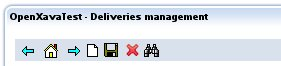

Table of Contents
1.Обзор системы | 2. Мой первый проект | 3. Модель | 4. Формы | 5. Таблицы | 6. Объектно-реляционное связывание | 7. Контроллеры | 8. Приложение | 9. Расширенные возможности
Глава 7: Контроллеры (Controllers)
Начнем с ответа на вопрос, что такое Контролеры в OX. Контроллер - это логическая группа Действий, которая определяет реакцию системы на действия пользователей. В OX Действием (action) называется нажатие пользователем на кнопку, текстовую или графическую ссылку (buttons, links, images). Контроллеры определяются в файле controllers.xml file, расположенном в папке xava проекта OX.Действия не определяются внутри бизнес-компонентов из-за того, что существует достаточное множество общепринятых действий (generic actions), которые можно применять к любому компоненту.
Общепринятые действия определены в файле default-controllers.xml (расположен в OpenXava/xava), готовые для использования в приложении.
Синтаксис файла controllers.xml file следующий:
<controllers> <env-var ... /> ... <!-- 1 --> <object ... /> ... <!-- 2 --> <controller ... /> ... <!-- 3 --> </controllers>Корневым тегом является <controllers/>, определяющий группу контроллеров и вспомогательных элементов. Элементы, реализуемые внутри тега, описаны ниже. Это:
- env-var (м.б. несколько, необязателен): Переменная, содержащая конфигурационную информацию. Действия (actions) или фильтры (filters) могут обращаться к данной переменной. Значение переменной можно перекрывать в любом модуле.
- object (м.б. несколько, необязателен): Определяет сессионный объект Java (у которого время жизни - сессия). Т.е. такой объект создается для каждого пользователя и существует, пока существует сессия данного пользователя.
- controller (м.б. несколько, обязателен): Контроллер - суть, группа действий (actions).
Переменные среды (Environment variables)
Переменные среды используются для хранения конфигурационной информации. Действия (actions) или фильтры (filters) могут обращаться к данной переменной. Значение переменной можно перекрывать в любом из модулей. Синтаксис определения переменной среды:<env-var name="name" <!-- 1 --> value="value" <!-- 2 --> />
- name (элемент обязателен): Имя переменной среды, обязательно, в верхнем регистре, в качестве разделителя может использоваться подчеркивание. Обычно подчеркиванием разделяются слова.
- value (элемент обязателен): Значение переменной среды.
<env-var name="MYAPPLICATION_DEFAULT_YEAR" value="2007"/> <env-var name="MYAPPLICATION_COLOR" value="RED"/>
Сессионные объекты (Session objects)
Объекты Java, определенные в controllers.xml, имеет время жизни - сессия пользователя и называются сессионными. Такие объекты создаются при открытии сессии со стороны пользователя и существуют, пока существует сессия пользователя. Синтаксис определения сессионного объекта:<object name="objectName" <!-- 1 --> class="objectType" <!-- 2 --> value="initialValue" <!-- 3 --> scope="module|global" <!-- 4 New in v2.1 --> />
- name (обязательно): Имя объекта. Обычно используется имя приложения (OX application name) в качестве префикса имени во избежание конфликта имен в больших проектах со множеством объектов.
- class (обязательно): Полное имя Java объекта (с указанием пакета).
- value (необязательно): Начальное значение объекта.
- scope (обязательно): (Начиная с версии 2.1) По-умолчанию, область видимости - модуль (module). Т.е. каждый модуль будет иметь собственную копию такого объекта. Также можно использовать область видимости global. В этом случае все модули приложения OX будут использовать одну копию объекта (под приложением здесь подразумевается .war).
<object name="xava_view" class="org.openxava.view.View"/> <object name="xava_referenceSubview" class="org.openxava.view.View"/> <object name="xava_tab" class="org.openxava.tab.Tab"/> <object name="xava_mainTab" class="org.openxava.tab.Tab"/> <object name="xava_row" class="java.lang.Integer" value="0"/> <object name="xava_language" class="org.openxava.session.Language"/> <object name="xava_newImageProperty" class="java.lang.String"/> <object name="xava_currentReferenceLabel" class="java.lang.String"/> <object name="xava_activeSection" class="java.lang.Integer" value="0"/> <object name="xava_previousControllers" class="java.util.Stack"/> <object name="xava_previousViews" class="java.util.Stack"/>Данные объекты широко используются в функционировании OpenXava, вы также можете использовать их при реализации ваших действий (actions). Также вы можете создавать свои собственные сессионные объекты. Сначала создайте соответствующий Java класс, затем укажите его в файле controllers.xml в папке xava вашего проекта OX.
Контроллер vs Действия
Напомним себе, что Контроллер - это набор действий (actions).Синтаксис описания Контроллера:
<controller name="name" <!-- 1 --> > <extends ... /> ... <!-- 2 --> <action ... /> ... <!-- 3 --> </controller>
- name (обязательно): Имя контроллера.
- extends (м.б. несколько, необязательно): Позволяет реализовать множественное наследование. Контроллер наследует все действия контроллеров, указанных в качестве предка в данном параметре.
- action (м.б. несколько, обязательно): Реализует логику, которая выполняется, когда пользователь выполняет действие в пользовательском интерфейсе (например, кликает по ссылке).
Синтаксис описания действия (action):
<action name="name" <!-- 1 --> label="label" <!-- 2 --> description="description" <!-- 3 --> mode="detail|list|ALL" <!-- 4 --> image="image" <!-- 5 --> class="class" <!-- 6 --> hidden="true|false" <!-- 7 --> on-init="true|false" <!-- 8 --> on-each-request="true|false" <!-- 9 New in v2.1.2 --> before-each-request="true|false" <!-- 10 New in v2.2.5 --> by-default="never|if-possible|almost-always|always" <!-- 11 --> takes-long="true|false" <!-- 12 --> confirm="true|false" <!-- 13 --> keystroke="keystroke" <!-- 14 New in v2.0.1 --> > <set ... /> ... <!-- 15 --> <use-object ... /> ... <!-- 16 --> </action>
- name (обязательно): Имя действия, которое должно быть уникально в пределах контроллера, но в разных контроллерах могут использоваться одинаковые имена действий. Когда вы ссылаетесь на действие (action), всегда указывайте имя действия вместе с именем контроллера в формате ControllerName.actionName.
- label (необязательно): Название кнопки или текст ссылки. Вместо данного параметра рекомендуем определять текстовые поля в файлах i18n (интернационализация).
- description (optional): Описательный текст действия. Вместо данного параметра рекомендуем определять текстовые поля в файлах i18n (интернационализация).
- mode (необязательно): Указывает режимы, в которых действие видимо (visible, т.е. может быть использовано пользователем и соответствующая ссылка или кнопка отображается на экране). Первоначальное значение ALL (все режимы), что означает, что данное действие видимо во всех режимах.
- image (необязательно): Адрес URL изображения, ассоциированного с данным действием. В текущей реализации изображение отображается в виде ссылки.
- class (необязательно): Указывает Java класс, реализующий логику, которая должна выполняться, если пользователь запустит данное действие. Класс должен расширять интерфейс IAction.
- hidden (необязательно): Указывает, что действие скрыто (hidden). Скрытое действие не отображается в линейке инструментов (button bar), тем не менее, оно может быть вызвано (использовано) в других местах, например, действие может быть ассоциировано с событием (event), как действие над свойством (property), в коллекции и т.д. Значение по умолчанию данного параметра false.
- on-init (необязательно): Если установить данное свойство в значение true, то действие будет выполнено автоматически при инициализации модуля. Значение по-умолчанию false.
- on-each-request (необязательно): (С версии 2.1.2) Если данное свойство установить в свойство true, то данное действие будет выполняться автоматически при обработке каждого запроса пользователя. Такое действие будет выполнено при первоначальном выполнении модуля, а также перед выполнением каждого действия пользователя. В момент выполнения данного действия все сессионные объекты OpenXava инициализированы и готовы к использованию. Что в свою очередь означает, что вы можете использовать в данном действии xava_view и xava_tab. Значение по-умолчанию false. Комбинируя с mode, вы можете запретить вызов данного действия для конкретного режима (list или detail) (С версии 3.0.2).
- before-each-request (необязательно): (С версии 2.2.5) Логика обработки действия с таким свойством в целом аналогична on-each-request. Основная разница - в том, что действие будет вызывать до того, как сессионные объекты OpenXava будут инициализированы. По умолчанию отключено (false). Еще раз обращаем внимание, что в таком действии нельзя использовать xava_view или xava_tab. Комбинируя с mode, можно запретить исполнение данного действия для конкретного режима (list или detail) (С версии 3.0.2).
- by-default (необязательно): Указывает значимость (weight) данного действия быть выполненным как действие по-умолчанию. Действие по-умолчанию выполняется в тот момент, когда пользователь нажимает ENTER. Значение по умолчанию для данного параметра never.
- takes-long (необязательно): Указав значение true, вы сообщаете OX, что выполнение данного действия может занимать длительное время (часы или минуты). OpenXava будет показывает progress bar в таком случае. Значение по умолчанию для данного параметра false.
- confirm (необязательно): Если указать значение true, то перед выполнением такого действия пользователь пользователю будет показан диалог, запрашивающий подтверждение на выполнение данного действия. Значение по умолчанию для данного параметра false.
- keystroke (необязательно): (С версии v2.0.1) Определяет клавиатурную комбинацию, набрав которую, пользователь сможет вызвать данное действие. Возможные значения параметра определены в javax.swing.KeyStroke. Примеры: "control A", "alt x", "F7".
- set (несколько, необязательно): Устанавливает значения для параметров вызова действия. Таким образом, класс действия может использован и сконфигурирован в нескольких контроллерах.
- use-object (м.б. несколько, необязательно): Присваивает сессионный объект, который будет передан действию перед выполнением. После выполнения объект будет возвращен обратно в контекст сессии (меняя сессионный объект, you can update even immutable objects).
Пример Контроллера:
<controller name="Remarks"> <action name="hideRemarks" class="org.openxava.test.actions.HideShowPropertyAction"> <set property="property" value="remarks" /> <set property="hide" value="true" /> <use-object name="xava_view"/> <!-- Not needed since v4m2 --> </action> <action name="showRemarks" mode="detail" class="org.openxava.test.actions.HideShowPropertyAction"> <set property="property" value="remarks" /> <set property="hide" value="false" /> <use-object name="xava_view"/> <!-- Not needed since v4m2 --> </action> <action name="setRemarks" mode="detail" class="org.openxava.test.actions.SetPropertyValueAction"> <set property="property" value="remarks" /> <set property="value" value="Hell in your eyes" /> <use-object name="xava_view"/> <!-- Not needed since v4m2 --> </action> </controller>Теперь можно и нужно включить данный контроллер в модуль, для которого нужны соответствующие действия. Делается это указанием нужных контроллеров в описании нужного модуля в файле xava/application.xml вашего приложения:
<module name="Deliveries"> <model name="Delivery"/> <controller name="Typical"/> <controller name="Remarks"/> </module>После этого модуль может выполнять действия стандартного контроллера Typical (CRUD и печать), а также те действия, которые вы определили в своем собственном контроллере, названном Remarks. Верхняя панель инструментов (top button bar) будет содержать стандартные действия контроллера Typical:

В нижней панели инструментов (bottom button bar) появятся действия контроллера Remarks:

Расположение действий в той или иной панели инструментов определяется наличием ассоциированного изображения. Действия, для которых изображение задано, отображаются в верхней панели инструментов. Остальные в нижней.
Для hideRemarks код может быть примерно таким:
package org.openxava.test.actions; import org.openxava.actions.*; /** * @author Javier Paniza */ public class HideShowPropertyAction extends ViewBaseAction { // 1 private boolean hide; private String property; public void execute() throws Exception { // 2 getView().setHidden(property, hide); // 3 } public boolean isHide() { return hide; } public void setHide(boolean b) { hide = b; } public String getProperty() { return property; } public void setProperty(String string) { property = string; } }Класс "действия" должен реализовывать интерфейс IAction, но обычно удобнее наследовать класс BaseAction, который реализует большинство методов интерфейса IAction, за исключением execute(). В вышеприведённом примере мы видим ViewBaseAction в качестве базового класса. Этот класс имеет свойство view типа View. Что в совокупности с ниже приведенной декларацией:
<use-object name="xava_view"/> <!-- Не требуется, начиная с версии v4m2 -->позволяет управлять из "действия" видом (представлением) пользовательского интерфейса.
Конструкция <use-object /> приводит к тому, что перед вызовом "действия" (вернее метода execute() "класса-действия") сессионный объект xava_view будет присвоен свойству view. которое будет передано в "действие" (при этом удаляется префикс xava_, также удаляется префикс myapplication_ перед присваиванием объекта свойство).
Теперь в методе execute() можно вызывать getView(). В нашем примере (3) мы скрываем свойство, вызывая метод setHidden(). Более подробную информацию можно получить org.openxava.view.View.
С помощью следующей конструкции можно указать статические значения (константы) для свойств:
<set property="property" value="remarks" /> <set property="hide" value="true" />
Наследование у Контроллеров
Можно создавать контроллеры, наследующие одно или несколько действий от других контроллеров. Хочу подчеркнуть, что реализовано именно множественное наследование. Примером может служит стандартный контроллер Typical. Определение данного контроллера в OpenXava/xava/default-controllers.xml таково:<controller name="Typical"> <extends controller="Print"/> <extends controller="CRUD"/> </controller>Если задать в качестве "контроллера" класс Typical, то модуль будет обладать совокупностью возможностей "контроллеров" Print (предназначен для создания документов PDF и экспорта Excel) и CRUD (реализует базовые действия с базой данной: Create, Read, Update и Delete)
Используя наследование, можно переопределить поведение стандартного "контроллера", например таким образом:
<controller name="Family"> <extends controller="Typical"/> <action name="new" image="images/new.gif" class="org.openxava.test.actions.CreateNewFamilyAction"> <use-object name="xava_view"/> <!-- Not needed since v4m2 --> </action> </controller>Прошу обратить внимание, что имя "действия" в данном примере совпадает с стандартным "действием", определённым в контроллере Typical (вернее в контроллере CRUD, который наследуется Typical). В таком случае исходное действие игнорируется, вместо него будет использоваться ваше "действие". Таким образом, вы можете добавить необходимую свою логику в действие 'new'.
Действия для режима @Tab
Можно создавать "действия", которые будут применяться к группе объектов (бизнес-сущностей). Такие "действия" отображаются и используются именно в режиме "Список"/"Таблица" (List mode, @Tab). Но обычно они применяются не ко всем объектам из списка, а только к объектам, выбранным пользователем (user selected).Рассмотрим пример "действия", которое вызывается при удалении пользователем группы выбранных объектов:
<action name="deleteSelected" mode="list" <!-- 1 --> confirm="true" <!-- 2 --> class="org.openxava.actions.DeleteSelectedAction"> </action>Мы настроили свойство mode=”list” для того, чтобы отображать данное "действие" только в режиме "Список"(1). Т.к. данное действие должно удалять выбранные объекты, мы указываем confirm="true", чтобы у пользователя было запрошено подтверждение о необходимости выполнения данного действия(2). При этом нет необходимости указывать конструкцию <use-object/> для xava_tab (начиная с версии v2.1.4).
Рассмотрим программный код данного "действия":
package org.openxava.actions; import java.util.*; import org.openxava.model.*; import org.openxava.validators.*; /** * @author Javier Paniza */ public class DeleteSelectedAction extends TabBaseAction implements IModelAction { // 1 private String model; public void execute() throws Exception { int [] selectedOnes = getTab().getSelected(); // 2 if (selectedOnes != null) { for (int i = 0; i < selectedOnes.length; i++) { Map key = (Map) getTab().getTableModel().getObjectAt(selectedOnes[i]); try { MapFacade.remove(model, key); // 3 } catch (ValidationException ex) { addError("no_delete_row", new Integer(i), key); // 4 addErrors(ex.getErrors()); } catch (Exception ex) { addError("no_delete_row", new Integer(i), key); } } getTab().deselectAll(); // 5 resetDescriptionsCache(); // 6 } } public void setModel(String modelName) { // 7 this.model = modelName; } }В примере приведена реализация одного из стандартных "действия" OpenXava. Вы можете использовать данный пример как стартовую точку в разработке "действий" для режима "Список". Обратите внимание, что в этом примере (1) "действие" наследует класс TabBaseAction (с версии v2.1.4) и расширяет IModelAction. Наследование класса TabBaseAction позволяется воспользоваться готовой реализацией методов интерфейса IAction; а так как наш класс еще реализует интерфейс IModelAction, наш класс-действие имеет метод setModel() (7), который принимает на вход имя модели (имя компоненты OpenXava) перед её выполнением.
Мы можем обращаться к Tab, используя метод getTab() (2); данный метод реализован в TabBaseAction и это позволяет нам обращаться к сессионном объекту xava_tab. Используя getTab(), мы можем управлять отображаемыми объектами. Например, вызов getTab().getSelected() (2) возвращает индексы выбранных объектов, вызов getTab().getTableModel() возвращает модель таблицы (внутреннее представление) для манипуляции с данными, а метод getTab().deselectAll() позволяет снять признак выбора (Selected records). Более подробная информация находится в org.openxava.tab.Tab.
Возможно более интересным может показаться то, что мы увидим в примере MapFacade (3). MapFacade реализует возможность доступа к модели данных как Java maps (java.util.Map). Это пригодится, если например, вы получаете данные из объектов Tab or View в виде Map для того, чтобы их изменить. И соответственно, через изменение модели, вы измените и данные в БД, и наоборот. Все базовые классы OpenXava используют MapFacade для управления моделью, вы также можете использовать MapFacade. Хочу дать небольшую архитектурную подсказку: работа с maps удобна в случае некой обобщенной логики, но если вы хотите сделать что-то, специфичное для конкретного приложения или модели данных. то лучше работаться с самой моделью данных. Дополнительную информацию вы найдете в документации по классуorg.openxava.model.MapFacade.
В нашем примере вы видите, как отображать сообщения пользователю, используя метод addError(). Метод addError() принимает на вход id (идентификатор) сообщения (определены в файлах интернационализации i18n) и аргументы сообщения. Выводимые сообщения отображаются пользователю как ошибки. Чтобы выводить информационные сообщения. используйте метод addMessage(). Его поведение в целом аналогично вышеупомянутому addError(). Следующим шагом не мешало бы настроить понятные конечному пользователю тексты сообщений. OpenXava имеет прекрасные встроенные средства интернационализации i18n. Тексты сообщений и информационных, и об ошибках, настраиваются в специально для этого предназначенных файлах, имеющих имя вида MyProject-messages.properties с суффиксом ( _ru, _en, _ca, _es, _it, и т.д.), обозначающим Локаль (код локализации), для которой файл предназначен. Вы можете создавать текстовые сообщения на несколько языках, размещая их в соответствующих файлах. Например, MyProject-messages.properties_ru для русской версии сообщений. Эти файлы расположены в папке i18n вашего приложения. Вместо MyProject их имена имеют префикс, совпадающий с именем вашего приложения. Стандартные сообщения OX вы можете найти в папке OpenXavaTest/xava/i18n. Более того, вы можете локализовать все сообщения OpenXava для нужного вам языка, просто создав там соответствующий файл.
Поговорим чуть-чуть про обработку исключений. Обратите внимание на отличие в обработке ValidationException от остальных исключений. Большинство генерируемых OX исключений сами добавляю сообщения об ошибках для отображения в интерфейсе OX. Исключением в нашей ситуации как раз является класс ValidationException. Для которого приходится добавлять собственное сообщение.
Метод resetDescriptionsCache() (6) удаляет все кешированные объекты, использованные OpenXava для отображения комбо-списков (combos, @DescriptionList). Неплохо было бы вызвать данный метод всегда, когда обновляются данные в представлении.
Больше информации можно почерпнуть в документации по org.openxava.actions.BaseAction и org.openxava.actions.TabBaseAction.
Начиная с версии v2.1.4, данный тип Действий может быть определен как @ListAction (<list-action/> из<collection-view/>).
Перекрытие поиска по-умолчанию (Overwriting default search)
Давайте начнем с рассмотрения вариантов поиска, представленных в OX. Если модуль отображается в виде списка (режим @Tab) и пользователь кликает, чтобы переключиться в вид "Форма" (@View), то OpenXava ищет соответствующий объект и отображает его в виде формы. В этом режиме, если пользователь вводит данные в ключевые поля и нажимает кнопку поиска (бинокль), OX выполняет то же самое - ищет соответствующий объект и отображает его. Когда пользователь переходит между записями, нажимая на ссылки перехода на предыдущую или следующую запись, то OX выполняет поиск также, как в предыдущих случаях.OpenXava позволяет разработчику переопределять поведение системы при поиске путем задания собственного класс, реализующего Действие поиска. Рассмотрим на пример, как это сделать.
Сначала нам придется определить наш модуль в файле xava/application.xml, например вот так:
<module name="Deliveries"> <env-var name="XAVA_SEARCH_ACTION" value="Deliveries.search"/> <model name="Delivery"/> <controller name="Typical"/> <controller name="Remarks"/> <controller name="Deliveries"/> </module>Выше мы настроили переменную среды XAVA_SEARCH_ACTION, которая будет указывать на наше Действие, которое мы хотим использовать для поиска.
Само же действие определяется в xava/controllers.xml:
<controller name="Deliveries"> <action name="search" mode="detail" by-default="if-possible" hidden="true" class="org.openxava.test.actions.SearchDeliveryAction" keystroke="F8"> <use-object name="xava_view"/> <!-- Not needed since v4m2 --> </action> ... </controller>Рассмотрим программный код соответствующего класса, выполняющего наше Действие:
package org.openxava.test.actions; import java.util.*; import org.openxava.actions.*; import org.openxava.util.*; /** * @author Javier Paniza */ public class SearchDeliveryAction extends SearchByViewKeyAction { // 1 public void execute() throws Exception { super.execute(); // 2 if (!Is.emptyString(getView().getValueString("employee"))) { getView().setValue("deliveredBy", new Integer(1)); getView().setHidden("carrier", true); getView().setHidden("employee", false); } else { Map carrier = (Map) getView().getValue("carrier"); if (!(carrier == null || carrier.isEmpty())) { getView().setValue("deliveredBy", new Integer(2)); getView().setHidden("carrier", false); getView().setHidden("employee", true); } else { getView().setHidden("carrier", true); getView().setHidden("employee", true); } } } }В данном классе-Действии вам необходимо осуществить поиск в базе данных (или использовать EJB2, EJB3 JPA илл Hibernate) и наполнить представление данными.
В нашем же примере (да и в большинстве случаев реального применения данного функционала) мы позволяем OX сделать за нас большинство работы, в том числе заполнение представления данными. Делаем мы это вызовом super.execute() (2) из нашего метода execute(). А что бы это заработало, нужно чтобы наш класс наследовался от SearchByViewKeyAction (1), в котором и определено стандартное определение super.execute() (2).
В OpenXava предопределено 3 Поиск-Действия:
- CRUD.searchByViewKey: Это действие, выполняемое по-умолчанию. Данное действие выполняет поиск по ключевому значению в представлении, никакие дополнительные события не выполняются.
- CRUD.searchExecutingOnChange: Работает в точности, как searchByViewKey , но вызывает событие @OnChange/on-change actions после выполнения поиска.
- CRUD.searchReadOnly: Тоже работает, как searchByViewKe, но при данном варианте форма Detai отображается в режиме "только для чтения"l. Применяется при создании модулей только для просмотра.
<module name="Products3ChangeActionsOnSearch"> <env-var name="XAVA_SEARCH_ACTION" value="CRUD.searchExecutingOnChange"/> <model name="Product3"/> <view name="WithDescriptionsList"/> <controller name="Typical"/> <controller name="Products3"/> <mode-controller name="Void"/> </module>Как можно увидеть из выше приведенного примера - все, что нужно, чтобы настроить поведение в данном случае - это просто правильно выставить значение переменной среды XAVA_SEARCH_ACTION.
Выполнение Действия при запуске модуля
Если указать свойство on-init=”true” при определении действия, то данное действие будет выполнено автоматически в момент первого запуска модуля. В таком действии мы можем выполнить дополнительные действия, которые необходимо выполнить один раз и только перед началом использования модуля.Рассмотрим пример.
Сначала нужно в controllers.xml определить контроллер:
<controller name="Invoices2002"> <action name="init" on-init="true" hidden="true" class="org.openxava.test.actions.InitDefaultYearTo2002Action"> <!-- <use-object name="xavatest_defaultYear"/> Начиная с версии v4m2, можно использовать аннотацию @Inject вместо use-object --> <!-- <use-object name="xava_tab"/> Начиная с версии v4m2, можно использовать аннотацию @Inject вместо use-object--> </action> ... </controller>Рассмотрим соответствующий программный код:
package org.openxava.test.actions; import javax.inject.*; import org.openxava.actions.*; import org.openxava.tab.*; /** * @author Javier Paniza */ public class InitDefaultYearTo2002Action extends BaseAction { @Inject // Since v4m2, if you do not use <use-object /> private int defaultYear; @Inject // Since v4m2, if you do not use <use-object /> private Tab tab; public void execute() throws Exception { setDefaultYear(2002); // 1 tab.setTitleVisible(true); // 2 tab.setTitleArgument(new Integer(2002)); // 3 } public int getDefaultYear() { return defaultYear; } public void setDefaultYear(int i) { defaultYear = i; } public Tab getTab() { return tab; } public void setTab(Tab tab) { this.tab = tab; } }В классе, реализующем наше Действие, вы выставляем значение года по-умолчанию в 2002 (1), делаем заголовок списка видимым (2), также мы можем добавить к заголовку текст (3). Заголовок может быть определен в файлах i18n, обычно он используется для отчетов, но вы также можете выводить его и при отображении в режиме списка.
Вызов другого модуля
Иногда удобно иметь возможность вызова одного модуля из другого программным путем. Например, представьте себе, что вы хотите отобразить список клиентов, и когда пользователь кликнет на определенном клиенте, то ему должен отобразиться список счетов клиента и пользователь может выбрать там же счет на редактирование. Один из вариантов, как этого достичь - определить модуль "Клиенты" с разрешенным режимом "Только список" . Когда же пользователь будет кликать на ссылку, чтобы перейти к режиму "Формы", то пользователь будет переадресован на модуль "Счета" и этот модуль будет показывать только счета выбранного Клиента. Рассмотрим, как это реализовать. Для этого нужно в файл application.xml внести следующее определение модуля:<module name="InvoicesFromCustomers"> <env-var name="XAVA_LIST_ACTION" value="Invoices.listOfCustomer"/> <!-- 1 --> <model name="Customer"/> <controller name="Print"/> <controller name="ListOnly"/> <!-- 2 --> <mode-controller name="Void"/> <!-- 3 --> </module>В этом модуле мы хотим, чтобы данные отображались только в режиме "Список". Для этого в описании модуля мы установим контроллер переключения режимов (mode controller) в значение Void (3). После этого ссылки 'detail' и 'list' уже не будут отображаться; and also you add a controller called ListOnly (2) in order to show the list mode, and only the list mode (if you only set the mode controller to Void the detail, and only the detail is displayed). Moreover you declare the variable XAVA_LIST_ACTION to define your custom action. When the user clicks the link in each row, then your own action will be executed. Действие необходимо задекларировать в controllers.xml:
<controller name="Invoices"> <action name="listOfCustomer" hidden="true" class="org.openxava.test.actions.ListCustomerInvoicesAction"> <!-- <use-object name="xava_tab"/> Since v4m2 you can use @Inject instead --> </action> ... </controller>Программный код:
package org.openxava.test.actions; import javax.inject.*; import java.util.*; import org.openxava.actions.*; import org.openxava.controller.*; import org.openxava.tab.*; /** * @author Javier Paniza */ public class ListCustomerInvoicesAction extends BaseAction implements IChangeModuleAction, // 1 IModuleContextAction { // 2 private int row; // 3 @Inject // Since v4m2, if you do not use <use-object /> private Tab tab; private ModuleContext context; public void execute() throws Exception { Map customerKey = (Map) tab.getTableModel().getObjectAt(row); // 4 int customerNumber = ((Integer) customerKey.get("number")).intValue(); Tab invoiceTab = (Tab) context.get("OpenXavaTest", getNextModule(), "xava_tab"); // 5 invoiceTab.setBaseCondition("${customer.number} = "+customerNumber); // 6 } public int getRow() { // 3 return row; } public void setRow(int row) { // 3 this.row = row; } public Tab getTab() { return tab; } public void setTab(Tab tab) { this.tab = tab; } public String getNextModule() { // 7 return "CustomerInvoices"; } public void setContext(ModuleContext context) { // 8 this.context = context; } public boolean hasReinitNextModule() { // 9 return true; } }Для переключения на другой модуль необходимо Действие, реализующее Java-интерфейс IChangeModuleAction (1). Этот интерфейс требует от действия реализации метода getNextModule() (7). OpenXava использует этот метод, чтобы узнать на какой модуль нужно переключиться после выполнения Действия. С помощью метода hasReinitNextModule() (9) можно оповестить OX о необходимости переинициилизации (re-initiated) модуля при переключении на него.
On the other hand this action implements IModuleContextAction (2) too and therefore it receives an object of type ModuleContext with the method setContext() (8). ModuleContext allows you to access the session objects of others modules. This is useful to configure the target module before changing to it.
Another detail is that the action specified in XAVA_LIST_ACTION must have a property named row (3); before executing the action this property is filled with the row number that user has clicked.
If you keep in mind the above details it is easy to understand the action:
- Gets the key of the object associated to the clicked row (4), to do this it uses the tab of the current module.
- Accesses to the tab of the target module using context (5).
- Sets the base condition of the tab of target module using the key obtained from current tab.
Подмена модели для текущего представления View (Changing the module of current view)
Альтернативной к изменению модуляAs an alternative to change the module you can choose changing the model of the current view. This is easy, you only need to use the APIs available in View. An example:public void execute() throws Exception { try { setInvoiceValues(getView().getValues()); // 1 Object number = getCollectionElementView().getValue("product.number"); Map key = new HashMap(); key.put("number", number); getView().setModelName("Product"); // 2 getView().setValues(key); // 3 getView().findObject(); // 4 getView().setKeyEditable(false); getView().setEditable(false); } catch (ObjectNotFoundException ex) { getView().clear(); addError("object_not_found"); } catch (Exception ex) { ex.printStackTrace(); addError("system_error"); } }This is an extract of an action that allows to visualize an object of another type. First you need to memorize the current displayed data (1), to restore it on returning. After this, you change the model of view (2), this is the important part. Finally you fill the key values (3) and use findObject() (4) to load all data in the view.
When you use this technique you have to keep in mind that each module has only one xava_view object active at a time, thus if you wish to go back you have the responsibility of restoring the original model in the view and restoring the original data.
Переход на JSP страницу
Несмотря на то, что OpenXava создает полнофункциональный пользовательский интерфейс автоматически, иногда нужно обратиться к "внешней" странице JSP, созданной вручную или иным способом. Для этого необходимо создать действие примерно такого вида:package org.openxava.test.actions; import org.openxava.actions.*; /** * @author Javier Paniza */ public class MySearchAction extends BaseAction implements INavigationAction { // 1 public void execute() throws Exception { } public String[] getNextControllers() { // 2 return new String [] { "MyReference" } ; } public String getCustomView() { // 3 return "doYouWishSearch.jsp"; } public void setKeyProperty(String s) { } }Для того, чтобы иметь возможность перейти к пользовательскому (custom) представление (страница JSP - это пользовательское представление с точки зрения OX), необходимо реализовать интерфейс INavigationAction (или достаточно будет ICustomViewAction ). Это позволит переопределить метод getNextControllers() (2), который указывает какие контроллеры нужно использовать the next controllers to use and with getCustomView() (3) the JSP page to display (3).
Создание пользовательского отчета JasperReports
OpenXava имеет встроенные возможности по созданию отчетов для конечного пользователя. Данные отчеты создаются с помощью системы JasperReports и доступны пользователю из табличного представления (@Tab). В представлениие @Tab Пользователь может применять фильтрацию, изменять порядок записей, скрывать/разрешать отображение стоблцов, изменять стоблцы местами. Результирующий отчет будет сгенерирован с учетом всех внесеннных пользователем изменений в текущее представление. Отчет формируется в виде файла PDF. Это встроенное, весьма удобное, IMHO, поведение системы OX.Кроме этого, OX позволяет самостоятельно разработчику создавать программным способом свои отчеты, используя JasperReports, и встраивать их в систему. Как вы понимаете, в любом нетривиальном бизнес-приложении возможность самостоятельно определять отчеты будет хорошим подспорьем. Специально для интеграции отчетов JasperReports в ваше приложение OpenXava в системе предусмотрено действие JasperReportBaseAction.
Рассмотрим процесс разработки собстенного отчета.
В начале вам необходимо спроектировать ваш отчет JasperReports. Мы рекомендуем использовать дизайнер отчетов iReport.
Затем вам необходимо создать собственный класс-Действие для запуска вашего отчета. Давайте рассмотрим на примере:
package org.openxava.test.actions; import java.util.*; import net.sf.jasperreports.engine.*; import net.sf.jasperreports.engine.data.*; import org.openxava.actions.*; import org.openxava.model.*; import org.openxava.test.model.*; import org.openxava.util.*; import org.openxava.validators.*; /** * Report of products of the selected subfamily. <p> * * Uses JasperReports. <br> * * @author Javier Paniza */ public class FamilyProductsReportAction extends JasperReportBaseAction { // 1 private ISubfamily2 subfamily; public Map getParameters() throws Exception { // 2 Messages errors = MapFacade.validate("FilterBySubfamily", getView().getValues()); if (errors.contains()) throw new ValidationException(errors); // 3 Map parameters = new HashMap(); parameters.put("family", getSubfamily().getFamily().getDescription()); parameters.put("subfamily", getSubfamily().getDescription()); return parameters; } protected JRDataSource getDataSource() throws Exception { // 4 return new JRBeanCollectionDataSource(getSubfamily().getProductsValues()); } protected String getJRXML() { // 5 return "Products.jrxml"; // To read from classpath // return "/home/javi/Products.jrxml"; // To read from file system } private ISubfamily2 getSubfamily() throws Exception { if (subfamily == null) { int subfamilyNumber = getView().getValueInt("subfamily.number"); // Using JPA, the usual with OX3 subfamily = XPersistence.getManager().find( Subfamily2.class, new Integer(subfamilyNumber)); // Using Hibernate, the usual with OX2, but still supported // subfamily = (ISubfamily2) // XHibernate.getSession().get( // Subfamily2.class, new Integer(subfamilyNumber)); // Using EJB2, the usual with OX1, but still supported //subfamily = Subfamily2Util.getHome(). // findByPrimaryKey(new Subfamily2Key(subfamilyNumber)); } return subfamily; } }Ваш класс-Действие должен расширять JasperReportBaseAction (1). При этом необходимо перекрыть 3 ниже перечисленных метода:
- getParameters() (2): Это объект типа Map, в котором будут содержаться параметры для передачи в отчет. В нашем классе-примеревы проверяем корректность переданных данных, используя вызов метода MapFacade.validate()) before (3).
- getDataSource() (4): A JRDataSource with data to print. In this case it is a collection of JavaBeans obtained calling a method of the model object. If you use EJB CMP2 Entities be careful and do not loop over an EJB2 Entity collection inside this method, as in this case is better only one EJB call to obtain all data.
- getJRXML() (5): The XML with the JasperReports design, this file can be in the classpath. You may have a source code folder called reports in your project to hold these files. Other option is put this file in the file system (new in v2.0.3), this is achieved by specifying the full path of file, for example: /home/javi/Products.jrxml or c:\\reports\\Products.jrxml (starting with windows driver letter recognized as absolute path since v3.0.3).
You can find more examples of JasperReport actions in the OpenXavaTest project, as InvoiceReportAction for printing an Invoice.
Загрузка и обработка файла (multipart form)
В данном разделе мы обсудим, как получить от клиента и обработать средствами OX бинарные файлы. This is implemented in a HTTP/HTML context using HTML multipart forms, although the OpenXava code is technologically neutral, hence your action will be portable to another environment with no recoding.Начинаем с того, что создаем ДействиеIn order to upload a file the first step is creating an action to direct to a form where the user can choose his file. This action must implements ILoadFileAction in this way:
public class ChangeImageAction extends BaseAction implements ILoadFileAction { // 1 ... public void execute() throws Exception { // 2 } public String[] getNextControllers() { // 3 return new String [] { "LoadImage" }; } public String getCustomView() { // 4 return "xava/editors/changeImage"; } public boolean isLoadFile() { // 5 return true; } ... }An ILoadFileAction (1) action is also an INavigationAction action that allows you to navigate to another controller (3) and to a custom view (4). The new controller (3) usually will have an action of type IProcessLoadedFileAction. The method isLoadFile() (5) returns true in case that you want to navigate to the form to upload the file, you can use the logic in execute() (2) to determine this value. The custom view is (4) a JSP with your own form to upload the file.
An example of a JSP for a custom view is:
<%@ include file="../imports.jsp"%> <jsp:useBean id="style" class="org.openxava.web.style.Style" scope="request"/> <table> <th align='left' class=<%=style.getLabel()%>> <fmt:message key="enter_new_image"/> </th> <td> <input name = "newImage" class=<%=style.getEditor()%> type="file" size='60'/> </td> </table>As you see, the HTML form is not specified, because the OpenXava module already has the form.
The last piece is the action for processing the uploaded files:
public class LoadImageAction extends BaseAction implements INavigationAction, IProcessLoadedFileAction { // 1 private List fileItems; private View view; private String newImageProperty; public void execute() throws Exception { Iterator i = getFileItems().iterator(); // 2 while (i.hasNext()) { FileItem fi = (FileItem)i.next(); // 3 String fileName = fi.getName(); if (!Is.emptyString(fileName)) { getView().setValue(getNewImageProperty(), fi.get()); // 4 } } } public String[] getNextControllers() { return DEFAULT_CONTROLLERS; } public String getCustomView() { return DEFAULT_VIEW; } public List getFileItems() { return fileItems; } public void setFileItems(List fileItems) { // 5 this.fileItems = fileItems; } ... }The action implements IProcessLoadedFileAction (1), thus the action must have a method setFileItem() (5) to receive the list of uploaded files. This list can be processed in execute() (2). The elements of the collection are of type org.apache.commons.fileupload.FileItem (4) (from fileupload project of apache commons). Only calling to get() (4) in the file item you will access to the content of the uploaded file.
Переопределение контроллеров по-умолчанию (с версии v2.0.3)
The controllers in OpenXava/xava/default-controllers.xml (before v2.0.3 it was OpenXava/xava/controllers.xml) are used by OpenXava to give to application a default behavior. Many times the easier way to override the default behavior of OpenXava is creating our own controllers and use them in our applications, that is you can create a controller called MyTypical, and using it in your modules instead of Typical that comes with OpenXava.Another option is override a default controller of OpenXava. In order to override a default controller you only need to create in your application a controller with the same name of default one. For example, if you want refine the collections behavior for your application then you have to create a Collection controller in your xava/controllers.xml, as following:
<controller name="Collection"> <action name="new" class="org.openxava.actions.CreateNewElementInCollectionAction"> </action> <action name="hideDetail" <!-- 1 --> class="org.openxava.test.actions.MyHideDetailElementInCollection"> </action> <action name="save" class="org.openxava.actions.SaveElementInCollectionAction"> <use-object name="xava_view"/> <!-- Not needed since v4m2 --> </action> <action name="remove" class="org.openxava.actions.RemoveElementFromCollectionAction"> <use-object name="xava_view"/> <!-- Not needed since v4m2 --> </action> <action name="edit" class="org.openxava.actions.EditElementInCollectionAction"> <use-object name="xava_view"/> <!-- Not needed since v4m2 --> </action> <action name="view" class="org.openxava.actions.EditElementInCollectionAction"> <use-object name="xava_view"/> <!-- Not needed since v4m2 --> </action> </controller>In this case we only override the behavior of hideDetail (1) action. But we must declare all actions of the original controller, because OpenXava rely on all these actions for working; we cannot remove or rename actions.
"Интерфейсы" "действий"
Как вы увидили в этой главе, поведение "действия" зависит от интерфейсов (Java interface), которые оно реализует. Перечислем все возможные интерфейсы для "действий":- IAction: Базовый интерфейс, который должен быть реализован любым "действием".
- IChainAction: Позволяет задавать цепочку "действий", that is when the execution of the action finishes, then the next action is executed immediately.
- IChainActionWithArgv: (с версии v2.2) It's a refinement of IChainAction. It allows to send as arguments values for filling properties of the chained action before execute it.
- IChangeControllersAction: To change the controller (the actions) available to user.
- IChangeModeAction: To change the mode, from list to detail or vice versa.
- IChangeModuleAction: Переключение модуля (модели).
- ICustomViewAction: Использование внешней страницы JSP.
- IForwardAction: Переадресация на внешний Servlet или страницу JSP page. Реализация данного интерфейса приводит к совсем другому результату, чем ICustomViewAction; ICustomViewAction размещает вашу страницу JSP внутрь пользовательского интерфейса OpenXava (который в свою очередь может быть обернут порталом), в то время, как IForwardAction польностью переадресует броузер к указанному URI.
- IHideActionAction, IHideActionsAction: Allows to hide an action or a group of actions in the User Interface (new in v2.0).
- IJDBCAction: Allows to use JDBC in an action directly. It receives an IConnectionProvider. Works like an IJDBCCalculator (see chapter 3).
- ILoadFileAction: Навигация к представлению, позволяющему конечному пользователю загрузить файл на сервер.
- IModelAction: "Действие", которое возвращает имя модели.
- IModuleContextAction: Gets a ModuleContext in order to access the session objects of other modules.
- INavigationAction: Дополняет IChangeControllersAction и ICustomViewAction.
- IOnChangePropertyAction: This interface must be implemented by the actions that react to the value change event in the user interface.
- IProcessLoadedFileAction: Processes a list of files uploaded from client to server.
- IRemoteAction: Useful when you use EJB2. Well used it can be a good substitute for a SessionBean.
- IRequestAction: Receives a servlet request. This type of actions links your application to the Servlet/JSP technology, hence it is better avoiding it. But sometimes a little bit of flexibility is needed.
- IShowActionAction, IShowActionsAction: Allows to show an action or a group of actions previously hidden in an IHideAction(s)Action (new in v2.0).